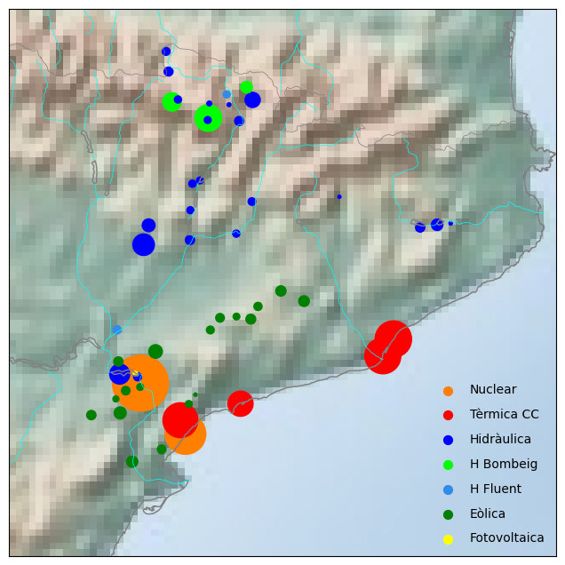
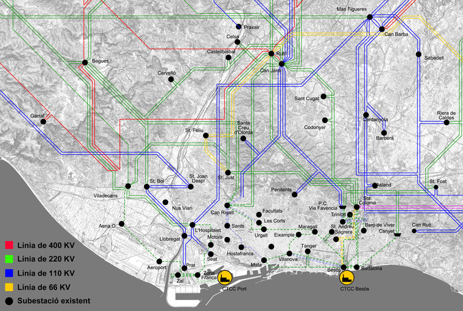

Centrals elèctriques a Catalunya#
%matplotlib inline
import numpy as np
import matplotlib.pyplot as plt
from mpl_toolkits.basemap import Basemap
import pandas as pd
centrals = pd.read_csv('data/ProdElec/centrals.csv')
lat = centrals['lat'].values
lon = centrals['long'].values
pot = centrals['pot'].values
col = centrals['col'].values
fig = plt.figure(figsize=(8, 8))
m = Basemap(projection='lcc', resolution='f',
lat_0=41.7, lon_0=1.5,
width=3E5, height=3E5)
m.shadedrelief()
m.drawcoastlines(color='gray')
m.drawcountries(color='gray')
m.drawrivers(color='cyan')
m.scatter(lon, lat, latlon=True,
s=pot, c=col
)
tipusN = ['Nuclear','Tèrmica CC','Hidràulica','H Bombeig','H Fluent','Eòlica','Fotovoltaica']
tipusC = ['#ff7f00','#ff0000','#0000ff','#00ff00','#318CE7','#008000','#ffff00' ]
for a in range(7):
plt.scatter([], [], c=tipusC[a], s=50,
label=tipusN[a])
plt.legend(scatterpoints=1, frameon=False,
labelspacing=1, loc='lower right');

centrals
| central | tipus | pot | lat | long | col | |
|---|---|---|---|---|---|---|
| 0 | Asco I-II | N | 2060.00 | 41.200000 | 0.569444 | #ff7f00 |
| 1 | Vandellos II | N | 1087.00 | 40.951400 | 0.866700 | #ff7f00 |
| 2 | Besos V | CC | 873.00 | 41.418333 | 2.228611 | #ff0000 |
| 3 | Port Barcelona | CC | 850.00 | 41.336667 | 2.159167 | #ff0000 |
| 4 | Besos III-IV | CC | 826.00 | 41.419444 | 2.229722 | #ff0000 |
| 5 | Plana del Vent | CC | 800.00 | 41.019170 | 0.832780 | #ff0000 |
| 6 | Estany Gento-Sallent | HR | 468.00 | 42.510290 | 1.003370 | #00ff00 |
| 7 | Tarragona Power | CC | 417.00 | 41.102141 | 1.225140 | #ff0000 |
| 8 | Santa Anna | H | 304.00 | 41.882708 | 0.580267 | #0000ff |
| 9 | Riba-roja | H | 262.80 | 41.243400 | 0.432664 | #0000ff |
| 10 | Moralets | HR | 222.00 | 42.588039 | 0.760375 | #00ff00 |
| 11 | Tavascan | H | 152.50 | 42.600000 | 1.300000 | #0000ff |
| 12 | Les Rotes-Monclúes-Sant Antoni | E | 122.00 | 41.356944 | 0.666389 | #008000 |
| 13 | Canelles | H | 108.00 | 41.978611 | 0.612222 | #0000ff |
| 14 | Aiguamox-Arties | H | 99.17 | 2.699814 | 0.876692 | #0000ff |
| 15 | Coll del Moro-Torre Madrina | E | 96.00 | 41.052071 | 0.438887 | #008000 |
| 16 | Montamara | HR | 90.00 | 42.662420 | 1.259300 | #00ff00 |
| 17 | Susqueda | H | 86.30 | 41.980000 | 2.525600 | #0000ff |
| 18 | Ecovent-Baix Ebre-Tortosa | E | 82.05 | 40.812500 | 0.521111 | #008000 |
| 19 | Serra de Rubió | E | 75.00 | 41.608056 | 1.641944 | #008000 |
| 20 | Alta Anoia-Pujalt | E | 70.00 | 41.658333 | 1.489444 | #008000 |
| 21 | Conesa II-Les Forques II-Savallà | E | 64.00 | 41.519190 | 1.291390 | #008000 |
| 22 | Mudefer | E | 57.60 | 41.039550 | 0.250540 | #008000 |
| 23 | Escambrons-Coll de Panissot | E | 57.00 | 41.305450 | 0.422700 | #008000 |
| 24 | Camarasa | H | 56.00 | 41.908060 | 0.886862 | #0000ff |
| 25 | Sau | H | 56.00 | 41.967647 | 2.413108 | #0000ff |
| 26 | Llavorsí | H | 54.80 | 42.495700 | 1.210500 | #0000ff |
| 27 | Benos | H | 53.10 | 42.737526 | 0.735291 | #0000ff |
| 28 | Serra del Tallat | E | 49.50 | 41.525094 | 1.088716 | #008000 |
| 29 | Les Calobres-Les Colladetes | E | 49.38 | 40.875079 | 0.712381 | #008000 |
| 30 | Fatarella | E | 48.30 | 41.162280 | 0.473370 | #008000 |
| 31 | Seròs II | HF | 44.60 | 41.461667 | 0.411944 | #318CE7 |
| 32 | Montargull | E | 44.00 | 41.581970 | 1.338480 | #008000 |
| 33 | Flix | H | 42.52 | 41.231043 | 0.550137 | #0000ff |
| 34 | Pont de Rei | H | 40.70 | 42.836667 | 0.717500 | #0000ff |
| 35 | Serra de Vilobí | E | 40.50 | 41.465000 | 1.025278 | #008000 |
| 36 | Oliana | H | 37.89 | 42.098969 | 1.296558 | #0000ff |
| 37 | Talarn II | H | 35.20 | 42.185778 | 0.900361 | #0000ff |
| 38 | Esterri | HF | 34.22 | 42.626997 | 1.126262 | #318CE7 |
| 39 | Rialb | H | 34.00 | 41.940372 | 1.193775 | #0000ff |
| 40 | Caldes | H | 34.00 | 42.600000 | 0.800000 | #0000ff |
| 41 | Terradets | H | 32.50 | 42.055000 | 0.888000 | #0000ff |
| 42 | Capdella II | H | 31.75 | 42.500000 | 1.000000 | #0000ff |
| 43 | Trucafort | E | 30.85 | 41.099520 | 0.887460 | #008000 |
| 44 | Sant Antoni | H | 30.00 | 42.201950 | 0.949970 | #0000ff |
| 45 | Les Forques | E | 30.00 | 41.531667 | 1.196944 | #008000 |
| 46 | Barbers | E | 30.00 | 41.180780 | 0.567236 | #008000 |
| 47 | Vilalba dels Arcs | E | 24.00 | 41.120800 | 0.409590 | #008000 |
| 48 | Sant Maurici | H | 15.50 | 42.581500 | 1.009750 | #0000ff |
| 49 | Ramon Escriche | S | 12.00 | 41.247270 | 0.535090 | #ffff00 |
| 50 | Espot-Torrassa | H | 9.76 | 42.575900 | 1.142290 | #0000ff |
| 51 | El Pasteral | H | 8.00 | 41.986190 | 2.615300 | #0000ff |
| 52 | Collet dels Feixos | E | 7.92 | 41.145620 | 0.930050 | #008000 |
| 53 | La Baells | H | 7.00 | 42.121931 | 1.878300 | #0000ff |
Xarxa distribució elèctrica AMB#
